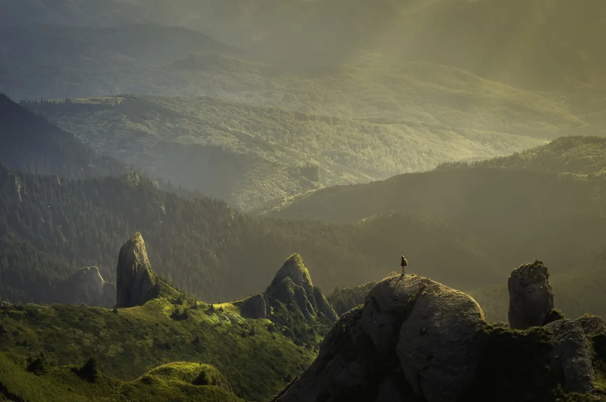
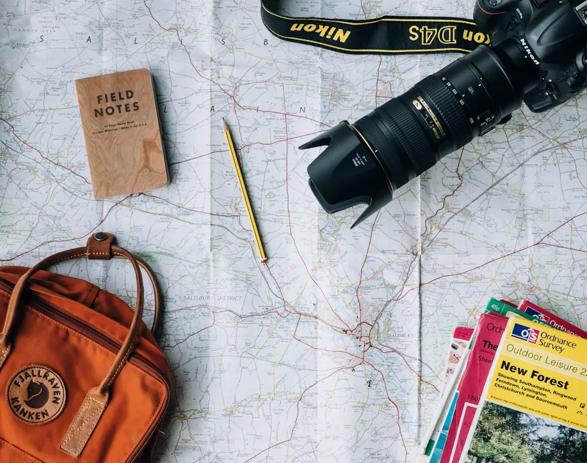

서로 먼 풍경을
한 기록 안에
천천히 기릅니다.
A citizen of Earth, holding distant climates together.
물이 무서웠습니다.
지금은 다이버예요.
2022년 12월부터 서로 다른 환경에서 만난 감각을 사진과 글로 남기고 있습니다. 바다와 숲, 사막과 이끼숲처럼 쉽게 함께 놓이지 않는 풍경은 LOMO Route Studio와 언젠가 지을 테라리움 하우스의 상상이 되었습니다.
BEGIN / DEC 2022SEA ↔ FORESTDESERT ↔ MOSS

SEA / SALTFOREST / ROOTDESERT / DUSTMOSS / MIST
N
LOMO ECOSYSTEM / WAYS TO FOLLOW
기록의 생태계
서로 다른 기후의 감각이 사진, 문장, 도시, 도구, 하우스로 이어집니다.지구 위에서 이동하고, 살아가고, 만들고, 기록하는 방식까지.
SEA / SALINE
FOREST / ROOTED
DESERT / ARID
MOSS / MISTED
MOVELIVEMAKERECORDDWELL
WAYPOINT 01 / ROUTE TOOL / MOVEMENTOPEN ROUTE ↗
MADE BY JIKOO ON · APP · MOVEMENT
LOMO Route
LOMO Route
Studio
사진 한 장에서, 빛나는 지구본 위로
내 여정이 하나의 영상이 됩니다.
